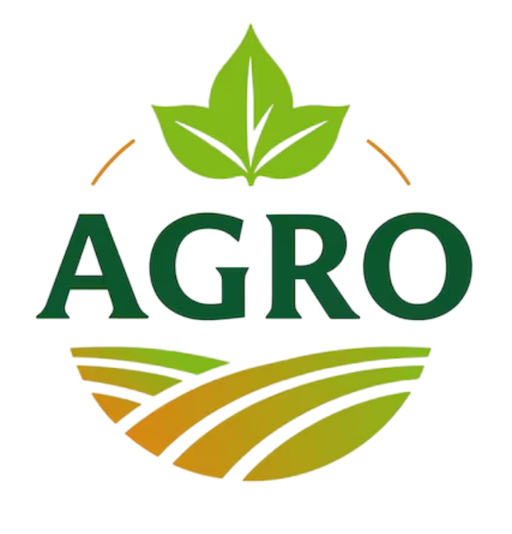

A AgroVale Cooperativa é uma Cooperativa muito relevante no Vale do São Patrício. Por produtores rurais na região de Ceres e Rialma, no Cerrado goiano.
Reunimos mais de 340 cooperados em 18 municípios, com foco na produção de grãos e no fortalecimento da agricultura familiar e empresarial do Vale.
Números da safra 2024/2025:
| Cultura | Área (alqueires) | Produção |
|---|---|---|
| Soja | 1.200 | 50.000 |
| Milho | 3.400 | 20.000 |
| Arroz | 40.000 | 20.000 |
| Feijão | 31.000 | 13.000 |